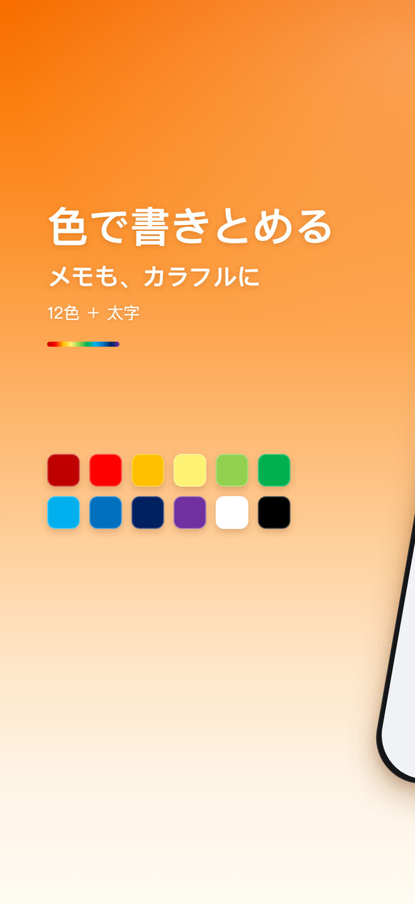
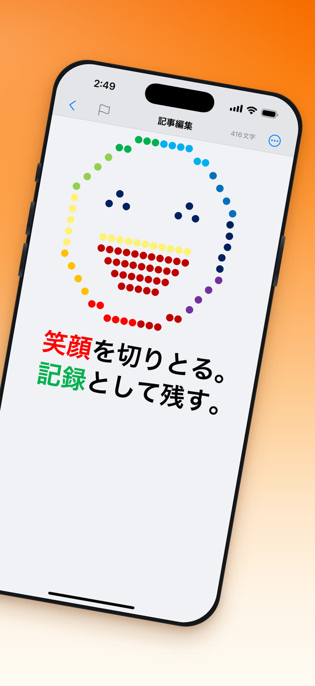
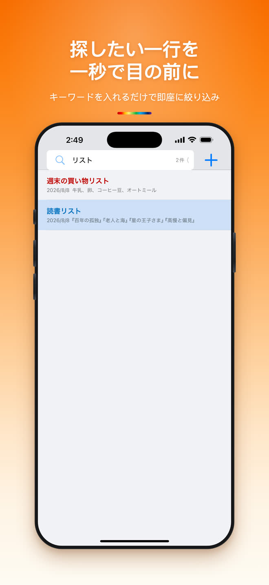
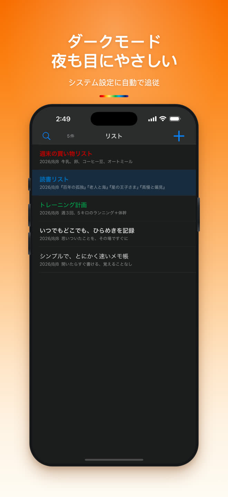

開いてすぐ書ける
登録も、チュートリアルも、初期設定の画面もありません。アプリを開けば、カーソルはもう待っています。
無料 · iPhone · 30言語対応
シンプルなほど、効率的。ミニメモは開いた瞬間から書ける完全無料のメモ帳です。いつでも、どこでも。
シェア
カラー
メモは白黒である必要はありません。12色の標準色と太字が編集ツールバーにそのまま並び、最後に使った色も覚えています。
12色 + 太字
笑顔を切りとる。
記録として残す。


できること
ダッシュボードも、チュートリアルも、管理するフォルダ階層もありません。メモ帳として本当に使う機能だけを残しました。
登録も、チュートリアルも、初期設定の画面もありません。アプリを開けば、カーソルはもう待っています。
標準色一式と太字が、入力中にワンタップで使えます。
キーワードを入れるだけで一覧が即座に絞り込まれます。フォルダもタグも管理不要です。
システムの外観に自動で追従。真夜中に書いたメモも、あるべき見た目のままです。
専用の取り消しとやり直しボタン。タイトルバーには文字数がリアルタイムで表示されます。
メモは端末内のデータベースに保存され、書き込み時に暗号化されます。内容がサーバーへ送られることはありません。
画面全体がシステムの言語に追従します。設定で個別に選ぶこともできます。
iOS標準の共有シートから、メールやメッセージ、インストール済みのどのアプリへでも送れます。
検索
キーワードを入れるだけで、メモが入力しながら絞り込まれます。フォルダもタグも整理も要りません。探していた一行が、そのまま上に出てきます。

ダークモード
ミニメモはシステムの外観に自動で追従します。iPhoneをダークモードにすればメモもそれに合わせて切り替わり、同じ文字色が暗い背景でもちゃんと読めます。

よくある質問
はい。ダウンロードも利用も無料です。書くための機能に有料で解除するものはありません。
必要ありません。登録もログインもなく、アプリを開けば最初のメモまでワンタップです。
iPhone、iOS 16.0 以降です。
お使いのiPhoneの中にあるデータベースに保存され、書き込み時に暗号化されます。メモの内容がサーバーへ送られることはありません。
できます。編集ツールバーに12色の標準色と太字があり、最後に使った色も覚えています。
ミニメモは30言語を内蔵しています。システムの言語に追従させることも、設定で個別に選ぶこともできます。